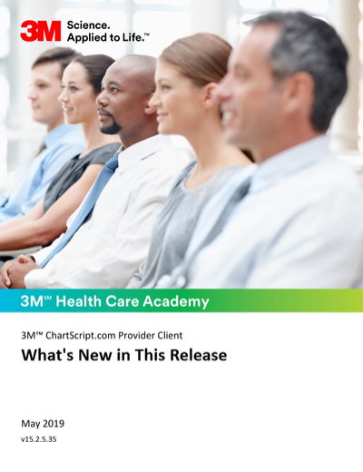
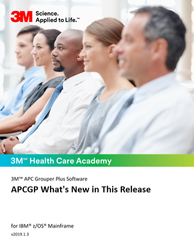
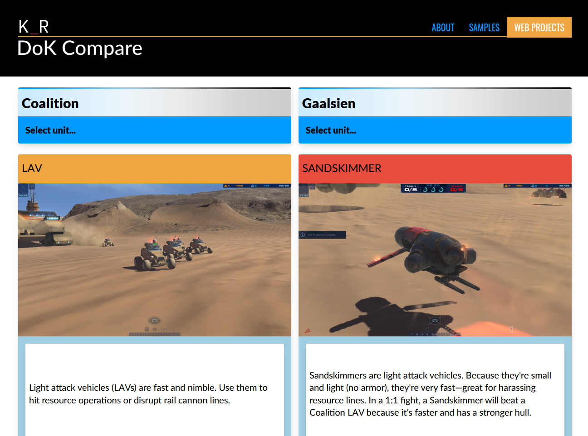

Hi, I'm Kyle Rollins – nice to meet you!
I'm a technical writer by day and a content/web developer by night. I always enjoy solving challenging problems and there's always a new challenge in web development.
While you're here, take a look at some of my writing samples or web development projects.
Building this site
It's funny how things circle around. The first iterations of my portfolio site were 100% vanilla HTML, CSS, and JavaScript. Then it was VuePress, a static site generator that uses Vue.js. And then it was Vue CLI and Tailwind CSS.
This version? Plain ol' HTML and CSS with a sprinkling of vanilla JavaScript. I have a couple of subdomains through Netlify that let me play around with more complicated things.
Writing samples
Most of my writing is covered under NDAs and not shareable. However, you can find several documents below.
If you're curious about these documents or my other work, contact me through LinkedIn.
User docs

-
3M™ ChartScript.com What's New in This Release
-
3M™ Enhanced Ambulatory Patient Grouping Systems Methodology Overview
-
3M™ ChartScript.com Provider Client What's New in This Release

Dev docs

-
3M™ APCGP What's New in This Release
 -
TRICARE OPPS Pricer Software Manual

Web projects
I'm always looking for an excuse to further my design and functional skills on the web. I don't always have the time to pursue projects (let alone finish them), but I typically learn a lot along the way.
Below, you'll see the projects I've completed. I plan to add more experimental things at a later date.
Redesigns

-
3M HIS Support website
Features
Visit-
Streamlined navigation. It's much easier for users to navigate and find what they're looking for.
-
Visual hierarchy. Use of iconography, vertical placement, size, and color helps users better parse the site's more important aspects.
I worked with the support organization's web team to update the look and feel of our support website.
It was much harder than it seems, as we were working with an Oracle knowledgebase tool that doesn't like to expose its inner workings.
We were able to get around most of the issues by writing custom JavaScript and overwriting default CSS styles. We also trimmed as much as possible from what the tool shipped by default. All in all, despite the custom logic and styles, the site performs better than it did before the redesign and ships less code.
-
Greenfield projects

-
Webhelp Next
Image pending release approval
Features
-
Announcements. Create announcments in Author-it and show them on the library's home page.
-
Tutorials. Define select topics from Author-it in a sequential manner to guide users through specific task flows. This helps bring attention to workflows that may be buried in dense table of contents.
-
Role-based filtering. Filter the table of contents based on roles that are defined in Author-it at a topic level.
Webhelp Next is a JavaScript single-page application (SPA) that understands custom transformed content from Author-it.
The 3M HIS Technical Communications team uses Author-it to create and maintain documentation. In 2019, Author-it announced their intent to retire the SPA output we had been using for our product libraries.
The proposed alternative didn't satisfy us. So, I set out to build our own SPA that could understand Author-it output on a deep level, yet only include the features our customers needed. Enter Webhelp Next.
Tools. Webhelp Next is built with Vue CLI. The content it consumes is transformed from XML to HTML via a custom XSLT file.
-
-
Doc Dashboard

Features
-
Metrics and internal sharing. In comparison to Google Analytics itself, Doc Dashboard is quite easy to use. More importantly, it's extremely easy to share within the company. Just copy a report's URL and send it interested stakeholders.
-
Analytics reports. Doc Dashboard has many reports that focus on specific data - and actions users can take based on that data. Each report processes the Google Analytics data independently to ensure it's reliable and usable.
-
Plotly.js charts. Several types of charts visually present the report data. These charts are most often intentionally simple. The goal is to show concrete, actionable information.
Doc Dashboard v2.0 is a complete re-build of the first version. I completely re-worked the data structures to be innately flexible and expandable.
The original version only collated and analyzed Google Analytics data for 3M Health Information Systems' online help. v2.0 serves as more of a hub, adding information from PDF documents and support content.
-
-
DoK Compare
Features
Visit-
Unit statistics. Every unit in Homeworld: Deserts of Kharak has a stats sheet. DoK Compare makes it easy to visualize those stats and see how different units stack up against each other.
-
Dynamic value calculations. DoK Compare automatically calculates the difference in stat values, then indicates whether each units' stats are higher, lower, or equal.
-
Responsive design. While small screens aren't ideal for comparing datasets, DoK Compare can shrink to a single-column view that maintains a usable format.
DoK Compare is based on the real-time strategy game Homeworld: Deserts of Kharak. It allows users to view unit statistics side-by-side.
The statistics comparison updates dynamically as new units are selected.
-
-
The Canney Valley

Features
Visit-
Gridsome GraphQL layer. The GraphQL data layer in Gridsome makes all sorts of interesting things possible. For example, creating lists of posts that share a tag or a series. And none of it requires a server - it's all done during the build process.
-
Dynamic navigation. The navigation throughout The Canney Valley updates based on the most recent posts.
-
Responsive design. The Canney Valley is mobile-friendly and can be viewed comfortably at nearly all screen sizes.
The Canney Valley (TCV) is where I publish technical tutorials and share my thoughts on life. Unfortunately, it hasn't gotten the attention it deserves in terms of content. Some day, I'll get to writing more.
TCV is built with Gridsome, which is a static site generator that uses GraphQL and Vue.js.
-
Under construction
While I'm fairly happy with the state of this site, there are a few more things I'd like to add. At the very least, I'll add a "Document design" and "Contact" section.